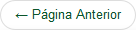
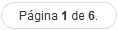
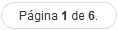

Visualizar imagem
Para visualizar a imagem do documento, clique no ícone  disponível na coluna Ações da Área de Trabalho. Esse ícone está disponível tanto na aba de Documentos quanto na aba de Processos:
disponível na coluna Ações da Área de Trabalho. Esse ícone está disponível tanto na aba de Documentos quanto na aba de Processos:
Aba Documentos - Ícone Visualizar Imagem
Aba Processos - Ícone Visualizar Imagem
Após clicar no ícone é apresentada a imagem para visualização:
Visualização da Imagem
Utilize os botões  e  para visualizar a página anterior e posterior (quando o documento possuir mais de uma página) ou os botões
para visualizar a página anterior e posterior (quando o documento possuir mais de uma página) ou os botões  e
e  para visualizar o grupo anterior e grupo posterior de páginas (quando o documento tiver muitas páginas). Além disso, verifique o total de páginas que o documento possui e qual página está selecionada para visualização por meio do botão .
para visualizar o grupo anterior e grupo posterior de páginas (quando o documento tiver muitas páginas). Além disso, verifique o total de páginas que o documento possui e qual página está selecionada para visualização por meio do botão .
Para visualizar as páginas do documento com um "zoom" grande, clique em cada uma delas para que a página selecionada seja exibida logo abaixo dos botões .
Ao clicar no botão o sistema encerrra a tela Imagem do Artefato e retorna para a tela Área de Trabalho. O botão está situado na barra inferior da tela Imagem do Artefato.
Created with the Personal Edition of HelpNDoc: Easy CHM and documentation editor